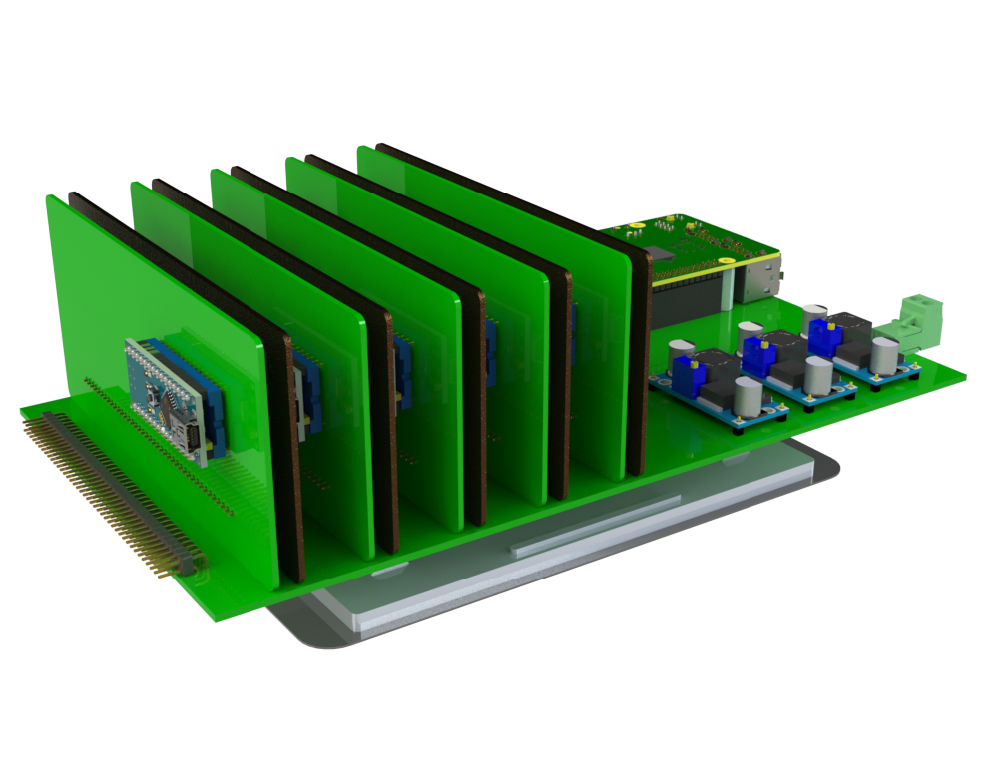

This project template is created to the spec of Spojko board with the 34-pin header for power supply. You will need to configure else to suit your design.
The board outline looks like the following:

See project files for licensing details. This project is open source.(c)2017 tvlada73